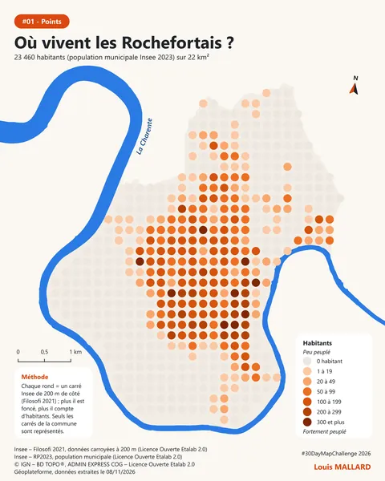
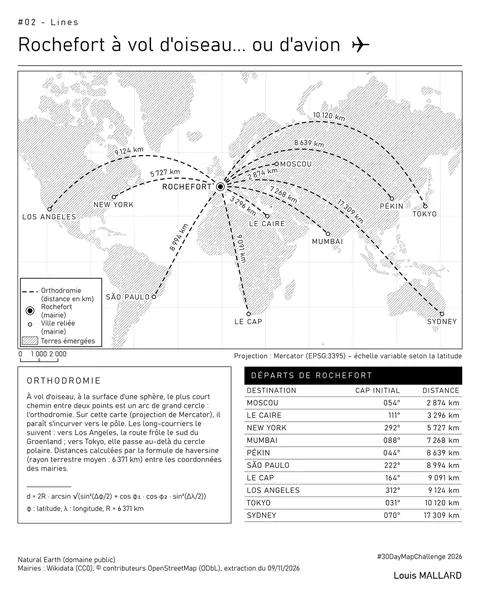
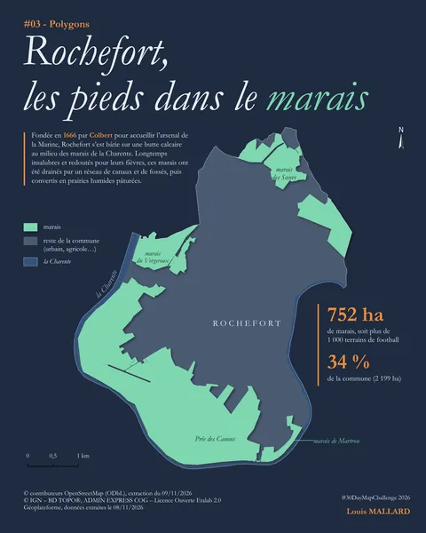
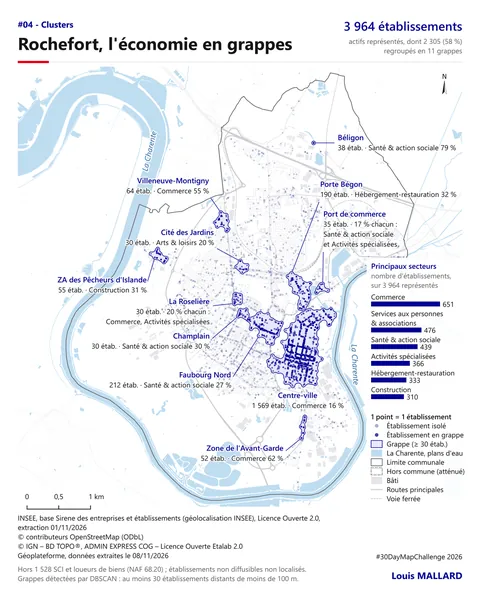
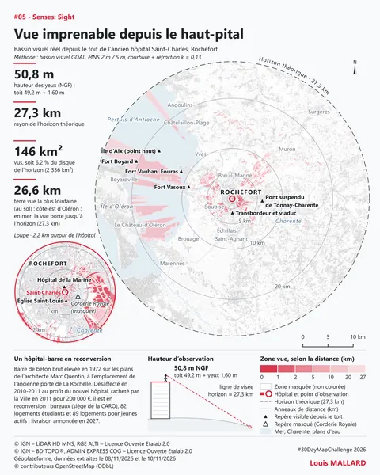
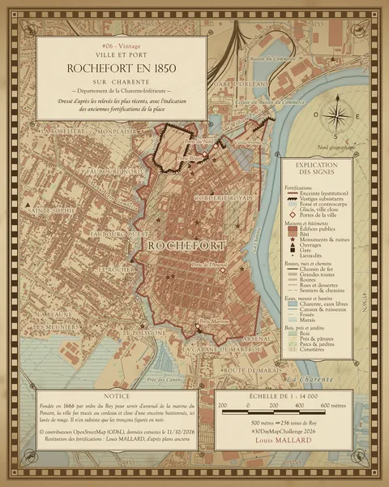
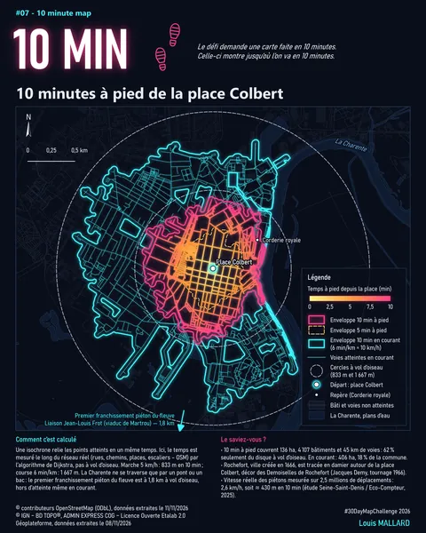

Les 30 jours
7 cartes sur 30
-

#01 Points Où vivent les Rochefortais ? -

#02 Lines Rochefort à vol d'oiseau... ou d'avion -

#03 Polygons Rochefort, les pieds dans le marais -

#04 Clusters Rochefort, l'économie en grappes -

#05 Senses: Sight Vue imprenable depuis le haut-pital -

#06 Vintage Rochefort en 1850 -

#07 10 minute map 10 minutes à pied de la place Colbert - Quelque chose qui pourrait exister #08 Utopia
- Ville et campagne #09 Urban-rural
- Une carte faite uniquement par une IA ou en ligne de commande #10 Prompting only
- Un paysage sonore ou du bruit #11 Senses: Sound
- Le pouvoir au sens large : énergie, réseaux, force, influence #12 Power
- Des interactions, éventuellement une carte interactive #13 Interactions
- Une carte si détaillée qu'elle devient le territoire #14 Borgesian map
- Quelque chose de volontairement faux ou retourné #15 Inside out
- Une carte faite à plusieurs #16 Collaborative map
- Seulement la lumière et l'ombre #17 Light & dark
- Pas de consigne #18 NULL
- Ce qui se sent #19 Senses: Smell
- Des grilles hexagonales #20 Hexagons
- Des données OSM, ou des contributions à OSM #21 OpenStreetMap
- Mettre le globe à plat, choisir sa projection préférée #22 Projections
- Ce qui se goûte #23 Senses: Taste
- Un réseau : itinéraires, transports, liens humains #24 Network
- Entre carte et art #25 Is this a map?
- L'eau #26 Water
- Un nouvel outil dans sa chaîne de production #27 New tool
- Un sentiment abstrait #28 Senses: Feeling
- Quelque chose d'intéressant avec des pixels #29 Raster
- Une carte analogique, faite à la main #30 Pen & paper